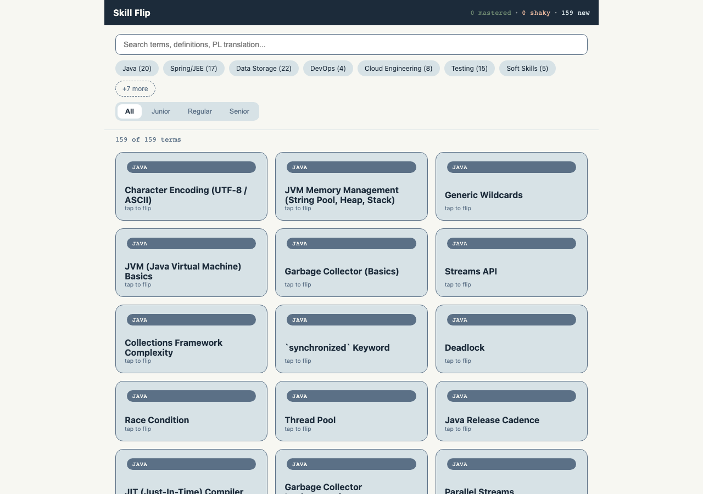
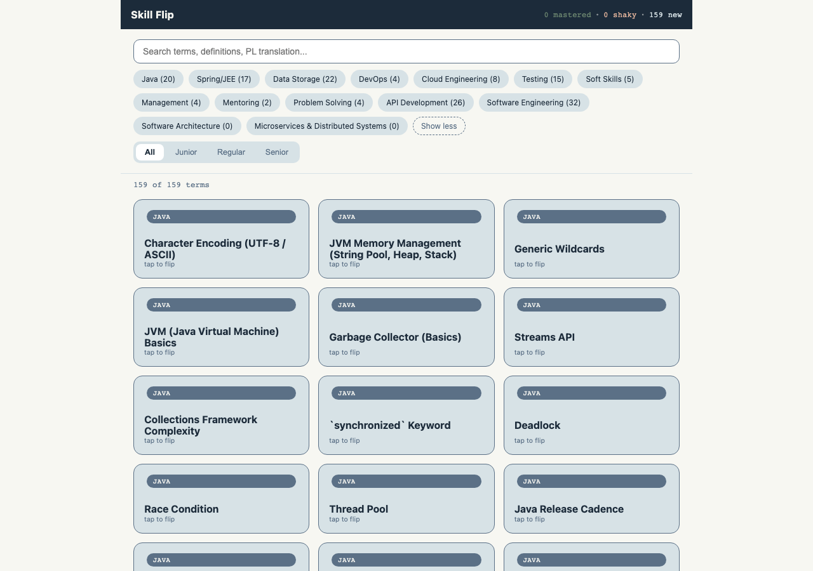

The single mockup (screen:browse-filterbar) is a structural and behavioral match. Layout, chip order (both the 7 visible and the 7 overflow, including the two new categories), the exact "+7 more"/"Show less" relabeling on a single reused element, and the active-chip/toggle-chip visual treatment all match. One pre-existing, out-of-scope cosmetic text difference (search input placeholder copy) is noted for completeness only.
Mockup: analysis/design-context/mockups/browse-filterbar-at-14-categories.html


.filter-bar → .cat-chips → .level-toggle → .result-count → .grid structure exactly.Java → Spring/JEE → Data Storage → DevOps → Cloud Engineering → Testing → Soft Skills → "+7 more" — identical order and label. ✓Management → Mentoring → Problem Solving → API Development → Software Engineering → Software Architecture → Microservices & Distributed Systems → "Show less" — identical order, both new 0-count categories present. ✓.chip.more element across both states. ✓screenshots/04-06-*.png). ✓.new-cat sage ring is explicitly annotated as review-only, not shipped UI — implementation correctly omits it (expected, not a deviation).Per spec.md: "behavioral fidelity is binding (exact collapse/expand semantics, exact label text \"+7 more\" / \"Show less\", exact visible count of 7); DOM/markup fidelity is not." All binding elements were verified live and match exactly; the implementation correctly uses its own established <span class="chip"> teardown-and-rebuild convention rather than the mockup's demonstration-only <button>/data-category markup, per spec.md's explicit allowance.